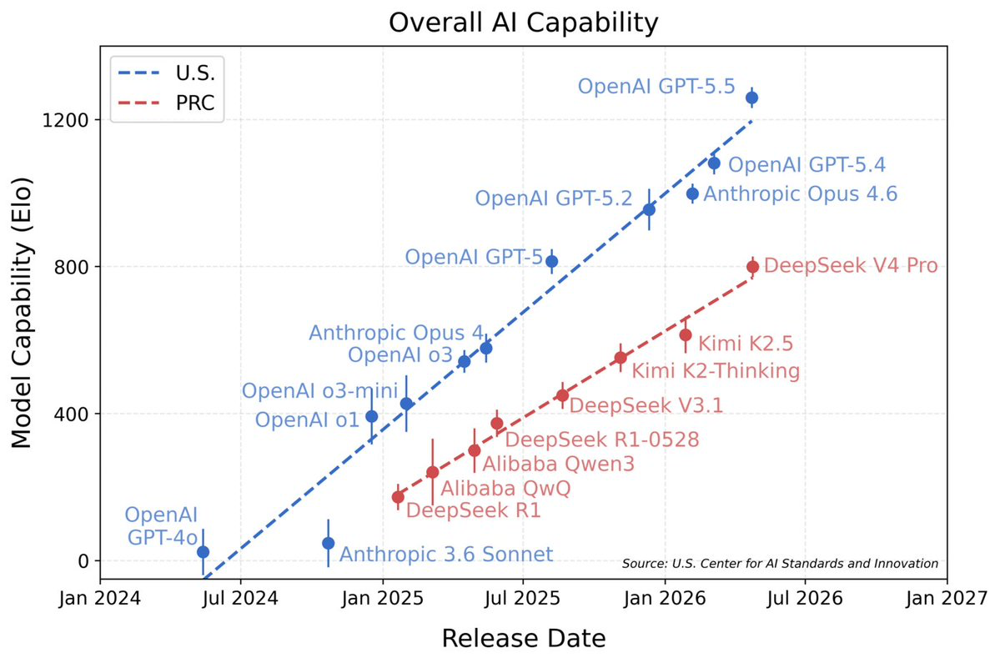

오픈 모델을 무시하기가 점점 더 어려워지고 있다.
오랫동안 전제는 단순했다. 가장 강력한 모델을 원한다면 클로즈드 최전선 모델을 썼다. 오픈 모델은 유용했지만 주로 실험, 비용 절감, 자체 호스팅을 위한 것이었다.
그 전제가 무너지기 시작했다.
우리는 Token Station Arena를 사용해, NVIDIA가 내놓은 미국 오픈 모델 NVIDIA Nemotron-3 Ultra 550B-A55B를 세 가지 실제 코딩 에이전트 작업에서 GPT-5.5와 비교 테스트했다.

이 위상은 우리만의 평가가 아니다. Artificial Analysis Intelligence Index에서 Nemotron-3 Ultra는 47.7점을 기록해 미국 오픈 웨이트 모델 중 가장 높고, Gemma 4 같은 차순위 미국 오픈 모델을 크게 앞선다. 클로즈드 최전선과 가장 강력한 중국 오픈 모델에는 여전히 뒤지지만, 미국 오픈 웨이트 가운데 견줄 만한 것은 없다.
결과 그 자체가 핵심이었다.
Nemotron-3 Ultra는 GPT-5.5와 동일한 미니 벤치마크 작업을 완수했다.
두 모델 모두 9회 중 9회를 통과했다.
이것은 모든 오픈 모델이 모든 클로즈드 모델을 이긴다는 뜻이 아니다. 개발자와 기업에게 더 중요한 무언가를 뜻한다.
미국 오픈 모델은 이제 장난감 같은 프롬프트뿐 아니라 실제 에이전트 작업에서도 경쟁할 만큼 강해졌다.
본격적으로 들어가기 전에 이용에 관한 한마디. NVIDIA NIM은 한정 기간 동안 Nemotron-3 Ultra 추론을 무료로 제공하고 있다. 그래서 Token Station에서도 무료로 쓸 수 있다. 또한 Token Station에 가입하면 받는 무료 크레딧은 GPT-5.5와 Claude Fable 5에도 쓸 수 있어, 세 모델 모두를 자신의 코딩 작업에서 평가할 수 있다.
왜 중요한가
오픈 대 클로즈드 모델 논쟁은 한때 대체로 이념적인 것이었다.
오픈 모델은 개발자에게 더 많은 제어권을 줬다. 클로즈드 모델은 대개 더 나은 성능을 줬다.
기준선을 분명히 해두자. 클로즈드 최전선은 여전히 크게 앞서 있다. 전반적 능력을 출시일별로 그려 보면 그림은 명확하다.

이 차트에서 두 가지가 두드러진다.
첫째, 오픈 모델은 집단으로서 여전히 클로즈드 최전선에 뒤처져 있다. 미국 선두 라인에 있는 모든 모델(GPT-5.5, GPT-5.4, Anthropic의 Opus 시리즈, 그리고 현재 클로즈드 최전선 SOTA인 Claude Fable 5)은 클로즈드다. 차트에 오른 오픈 웨이트 모델(DeepSeek, Qwen, Kimi)은 눈에 띄게 낮은 추세선에 있으며 Elo로 수백 점 뒤처져 있다.
둘째, 그리고 더 인상적인 점은 차트에 있는 오픈 모델이 모두 중국산이라는 것이다. 미국 오픈 모델은 어디에도 없다.
그런 배경에서, 미국 오픈 모델이 GPT-5.5와 동일한 코딩 에이전트 미니 벤치마크 작업을 해낸다는 사실은 논의의 흐름을 바꾼다.
이제 질문은 더 이상 이것이 아니다.
오픈 모델은 쓸모가 있는가?
더 나은 질문은 이것이다.
어떤 작업은 여전히 클로즈드 최전선 모델이 필요하고, 어떤 작업은 이제 강력한 오픈 모델로 돌릴 수 있는가?
이 구분은 실제 제품에 중요하다.
AI 에이전트는 단순한 챗봇이 아니다. 파일을 읽고, 코드를 수정하고, 도구를 호출하고, 테스트를 실행하고, 실패한 단계를 재시도하며, 긴 워크플로 전반에 걸쳐 작동한다. 이런 용도에서 모델 선택은 순수한 능력만의 문제가 아니다. 제어, 비용 구조, 가용성, 그리고 모델을 비즈니스에 맞게 적응시킬 수 있는지의 문제이기도 하다.
바로 그 지점에서 오픈 모델은 전략적으로 중요해지고 있다.
우리가 테스트한 미국 오픈 모델
이 미니 벤치마크의 오픈 모델은 NVIDIA Nemotron-3 Ultra 550B-A55B였다.
이 모델의 개요는 다음과 같다.
- 총 파라미터 5500억
- 활성 파라미터 550억
- MoE / latent-MoE 방식 아키텍처
- 미국 AI 인프라 기업 NVIDIA가 개발
- NVIDIA NIM을 통해 한정 기간 무료 추론, Token Station에서도 무료 제공
이것은 단지 저렴해서 쓰는 작은 모델이 아니다. 본격적인 추론과 에이전트 작업을 위해 설계된 대형 미국 오픈 모델이다.
GPT-5.5는 여전히 선두를 달리는 클로즈드 최전선 모델이다. 강력하고, 다듬어져 있으며, 폭넓게 유용하다. Anthropic의 최신 플래그십이자 현재 클로즈드 최전선 SOTA를 대표하는 Claude Fable 5도 마찬가지다. 이 미니 벤치마크에서는 아직 직접 대결 수치가 없지만, 오픈 모델이 쫓는 기준의 일부다. Nemotron-3 Ultra는 다른 종류의 가치를 보여준다. 모델 특성이 더 투명하고 배포 방식이 더 제어 가능한, 강력한 오픈 모델이다.
개발자와 기업에게 그것은 중요하다.
미니 벤치마크 구성
Token Station Arena를 사용해 코딩 에이전트 미니 벤치마크를 실행했다. 작고 초점이 분명한 테스트이며 리더보드가 아니다. 러너, 세 가지 작업, 모든 검사가 오픈 소스이므로 무엇을 테스트했는지 정확히 읽고 직접 재현할 수 있다.
구성은 다음과 같다.
- 2개 모델: GPT-5.5와 NVIDIA Nemotron-3 Ultra 550B-A55B
- 3개 코딩 에이전트 작업
- 모델당 작업당 3회 실행
- 총 18회 실행
이 미니 벤치마크는 유닛 테스트, 타입 체크, clippy, 작업별 검증 같은 결정론적 검사를 사용했다.
이것이 중요한 이유는, 코딩 에이전트를 답이 그럴듯하게 들리는지로만 평가해서는 안 되기 때문이다. 실제로 코드를 변경하고 검사를 통과해야 한다.
세 가지 코딩 에이전트 작업
세 작업 모두 Arena 저장소의 benchmark/tasks 폴더에 있다. 각 작업은 자체 완결적인 Rust 픽스처 프로젝트에 프롬프트와 기계로 검증 가능한 성공 기준 한 세트가 더해진 것이다. 모든 작업은 cargo test, cargo check, cargo clippy --all-targets -- -D warnings를 모두 통과해야 하며, 작업이 허용한 경로 밖의 파일을 수정한 실행은 심판이 실패로 처리한다. 따라서 에이전트는 무관한 변경이나 테스트 약화로는 통과할 수 없다.
1. API 엔드포인트 추가하기
이 작업은 모델이 기존 코드베이스 안에서 일반적인 제품 개발 변경을 할 수 있는지 테스트한다. catalog-core 라이브러리 crate와 catalog-api Axum crate를 포함한 작은 Rust 워크스페이스다. 프롬프트는 저장소에서 그대로 인용한다.
- Add `GET /products/top?limit=<n>` to the Axum app.
- Return JSON products sorted by descending popularity.
- Respect the optional `limit` query parameter. If it is
missing, return all products.
- Reuse existing catalog-core logic where possible.
- Do not remove or weaken the integration test.에이전트는 프로젝트 구조를 이해하고, 올바른 라우트나 핸들러를 찾고, 엔드포인트를 추가하고, 기대되는 응답을 반환하며, 프로젝트 검사를 계속 통과시켜야 한다. 이것은 개발자가 매일 하는 종류의 작업이다. 퍼즐이 아니다. 실무적인 엔지니어링 작업이다.
2. 실패하는 테스트 고치기
이 작업은 디버깅 능력을 테스트한다. 픽스처에는 catalog-core의 깨진 가격 계산 구현과 실패하는 유닛 테스트가 들어 있다.
- Fix the failing pricing unit test in `catalog-core`.
- Preserve the public function names and signatures.
- Keep the implementation simple and idiomatic.
- Do not weaken, remove, or rewrite tests to hide the bug.에이전트는 근본 원인을 찾아 구현을 고치고, 테스트 자체는 건드리지 않은 채 테스트를 다시 통과 상태로 되돌려야 한다. 이것이 중요한 이유는, 실제 코딩 에이전트는 실패에서 회복할 수 있어야 하기 때문이다. 모든 것이 깔끔하고 명확할 때만 새 코드를 쓸 수는 없다.
3. 가격 계산 로직 리팩터링하기
이 작업은 비즈니스 동작을 바꾸지 않으면서 코드 구조를 개선할 수 있는지 테스트한다.
- Refactor the duplicated discount calculation in
`catalog-core/src/pricing.rs`.
- Introduce one shared helper for computing the discount amount.
- Preserve all public function names, signatures, and behavior.
- Do not remove or weaken tests or the custom refactor check.표준 검사 위에 이 작업은 네 번째 관문을 더한다. 중복이 실제로 사라졌는지 검증하는 맞춤형 check-refactor.mjs 스크립트다. 에이전트는 가격 계산 규칙을 지키면서 유닛 테스트, 타입 체크, clippy, 그리고 그 리팩터링 전용 검증을 통과해야 한다. 이것은 단순한 코드 생성 프롬프트보다 실제 프로덕션 엔지니어링에 가깝다. 모델은 코드와 비즈니스 로직을 모두 이해해야 한다.
결과
| 지표 | GPT-5.5 | NVIDIA Nemotron-3 Ultra 550B-A55B |
|---|---|---|
| 완료된 실행 | 9/9 | 9/9 |
| 심판 평균 점수 | 5.0 | 4.8 |
중요한 결과는 작업 완수율이다.
두 모델 모두 모든 실행을 완수했다.
이것이 바로 내세울 만한 신호다.
미국 오픈 모델이 GPT-5.5와 동일한 코딩 에이전트 작업을 완수했다.
개발자에게 이것은 의미 있는 전환이다. 오픈 모델은 더 이상 차선의 선택지가 아니다. 실제 에이전트 시스템의 진지한 후보가 되어가고 있다.
오픈 모델이 따라잡고 있다
더 넓은 AI 시장은 멀티 모델 세계로 향하고 있다.
클로즈드 모델은 여전히 중요하다. 종종 최전선을 설정하며, 가치가 높은 많은 작업에서 탁월한 선택지로 남아 있다.
그러나 오픈 모델은 빠르게 따라잡고 있다. 실용적인 코딩, 추론, 에이전트 워크플로에 충분한 능력을 갖춰가고 있다. 또한 클로즈드 모델이 항상 제공할 수 있는 것은 아닌 이점도 있다.
- 배포 전략을 더 많이 제어할 수 있다
- 비공개 또는 내부 워크플로에 더 잘 맞는다
- 장기 인프라 계획이 더 예측 가능하다
- 커스터마이징의 유연성이 더 크다
- 단일 클로즈드 공급자에 대한 의존이 적다
Nemotron-3 Ultra가 특히 중요한 이유는 NVIDIA가 내놓은 미국 오픈 모델이기 때문이다. AI 능력과 인프라 제어를 모두 중시하는 기업에게 이 조합은 전략적으로 의미가 있다.
이것이 Token Station에 의미하는 것
미래는 모든 작업에 하나의 모델, 이 아니다.
어떤 작업은 클로즈드 최전선 모델이 필요하다. 어떤 작업은 이제 강력한 오픈 모델로 돌릴 수 있다. 많은 팀이 프로덕션에서 무엇을 쓸지 결정하기 전에 둘 다 시험해 보고 싶어 할 것이다.
바로 그래서 Token Station(models.bytefuture.ai)이 존재한다.
Token Station을 사용하면 개발자는 Nemotron-3 Ultra, GPT-5.5 등 최전선 모델에 하나의 플랫폼으로 접근할 수 있다. 브랜드 이름이나 짐작으로 고르는 대신, 자신의 작업에서 모델을 비교할 수 있다.
요점은 만능 승자를 선언하는 것이 아니다.
요점은 모델 선택을 실용적으로 만드는 것이다.
직접 실행해 보기
미국 오픈 모델은 클로즈드 최전선 모델을 따라잡고 있다.
Nemotron-3 Ultra가 우리의 코딩 에이전트 미니 벤치마크에서 GPT-5.5와 대등했다는 사실은, 모델 판도가 바뀌고 있다는 또 하나의 신호다.
게다가 우리 말을 그대로 믿을 필요는 없다. 미니 벤치마크 전체는 Anthropic 호환 게이트웨이라면 어디서든 돌아가므로, Token Station 키와 PATH에 등록된 claude CLI만 있으면 우리의 실행을 재현하는 데 필요한 것은 명령어 네 개다.
git clone https://github.com/hydai/token-station-arena
cd token-station-arena
# point the runner at Token Station (gateway root, no /v1)
export ANTHROPIC_BASE_URL=https://models.bytefuture.ai
export ANTHROPIC_AUTH_TOKEN=<your Token Station API key>
# run all three tasks against the configured models
cargo run --release -- benchmark --tasks all --models all --runs 3러너는 각 작업을 격리된 픽스처 안에서 실행하고, 결정론적 검사를 적용하며, 실행마다 토큰 수, 비용, 소요 시간을 담은 Markdown 보고서를 생성한다. benchmark/tasks/에 자신의 작업(픽스처, prompt.md, task.yml)을 넣으면, 우리 코드가 아니라 당신의 코드에서 이 모델들이 어떻게 동작하는지 알아볼 수 있다.
Token Station에서 Nemotron-3 Ultra(NVIDIA NIM 제공으로 한정 기간 무료)를 GPT-5.5, Claude Fable 5 등 다른 최전선 모델과 나란히 사용해 보라.